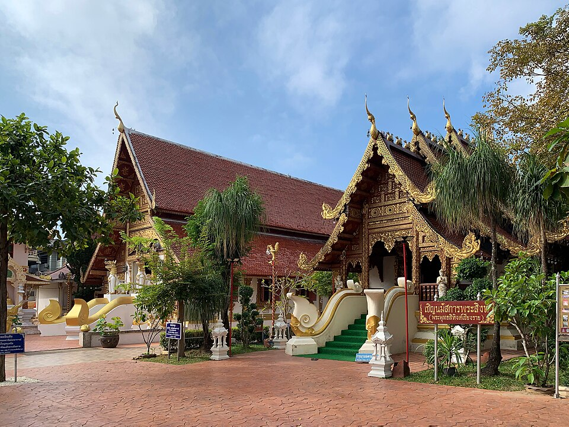

วัดพระสิงห์ · Wat Phra Sing
- 🛕 พระอารามหลวง ชั้นตรี ชนิดสามัญ · Royal temple, third class (Saman)พระอารามหลวง ชั้นตรี ชนิดสามัญdhammathai.org/watthai/dbview.php · dhammathai.org/watthai/index.php
มดแดงบันทึกปีของฉบับที่อ่านมาไว้ด้วย เพราะรายชื่อพวกนี้เปลี่ยนทุกปี · Each mark carries the year of the edition it was read from — these lists change every year, and a dated mark stays true.
มีข้อมูลบางส่วนแล้ว — ช่วยเติมให้ครบได้ฟรี · Some details on record — help fill in the rest, free.

📷 Chainwit. — CC BY-SA 4.0, via Wikimedia Commons
ตำแหน่งโดยประมาณ — วงกลมคือช่วงที่เป็นไปได้ · Approximate position — the circle is the range it could be in
🐜 ที่นี่ไม่มีเว็บของตัวเอง — หน้านี้คือที่บันทึกของมดแดง ใช้อ้างอิงและแชร์ได้เลย · This place keeps no website of its own — so this page is the record. Cite it, share it, link to it. เจ้าของยืนยันข้อมูลได้ฟรีที่นี่เจ้า · Owners: claim and correct it here, free
- หมวด · Category
- วัด-สิ่งศักดิ์สิทธิ์ · Wats & Sacred Places
- ชื่ออังกฤษ · English name
- Wat Phra Sing
- ที่อยู่ · Address
- ถนน สิงหไคล
- ถนน · Road
- ถนน สิงหไคล
ดูอีก 2 ที่บนถนนเดียวกัน เรียงตามลำดับที่เดินผ่าน · See 2 more on the same road, in walking order - แผนที่ · Map
- OpenStreetMap · Google Maps
อ่านต่อที่อื่น · Read more elsewhere
- 😎 หน้าภาพในวิกิมีเดียคอมมอนส์ · Wikimedia Commons file page
- 😎 ที่มาของเครื่องหมายที่แสดงไว้ · Source for the mark shown above
- 😎 ที่มาของเครื่องหมายที่แสดงไว้ · Source for the mark shown above
- 😎 วัดนี้ในคลังวิชา — ประวัติ ความเชื่อ และการปฏิบัติ · This temple in the wichaa archive — its history and practice
😎 = พาไปอ่านเรื่องของที่นี่โดยตรง ไม่ใช่ปุ่มแชร์หรือลิงก์ประจำทุกหน้า · 😎 marks a link about this place itself — not a share button or something every page carries
🐜 ช่วยเติมเบอร์โทร และ LINEได้ไหมเจ้า · Could you help add phone and LINE? ขึ้นทันทีเลย · It shows at once.

{kind=link}
ข้อมูลจาก OpenStreetMap · Data from OpenStreetMap · 2026-07-21
🎉 งานประจำปีที่นี่ · The festival year here
- สงกรานต์ (ปี๋ใหม่เมือง) · Songkran — Thai & Lanna New Year — 13–15 เมษายน (ในเชียงใหม่ยังมีวันสังขานต์ล่องและวันปากปี๋ก่อน-หลัง) · April 13–15 (Chiang Mai's Lanna calendar adds a lead-in and follow-on day)
วันที่เป็นช่วงตามธรรมเนียม ไม่ใช่วันยืนยันของปีนี้ ถามที่วัดหรือผู้จัดอีกครั้ง · These are the customary windows, not confirmed dates for this year — check with the wat or the organiser